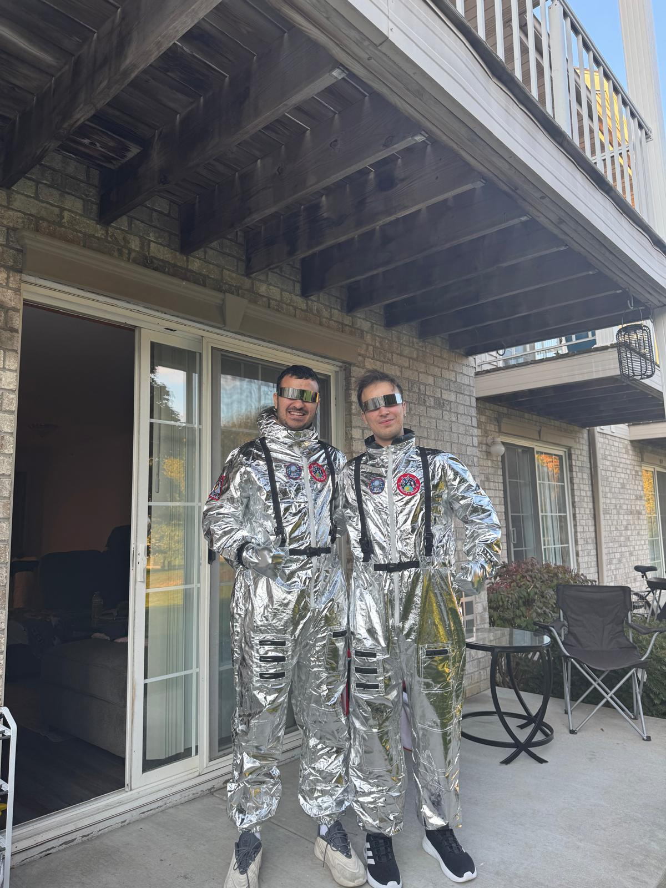
Halloween Astronaut Night
We dressed up as astronauts and fully lived the Halloween spirit with friends. Even our dog joined the “space mission,” making the night unforgettable with laughs, photos, and memories.

We dressed up as astronauts and fully lived the Halloween spirit with friends. Even our dog joined the “space mission,” making the night unforgettable with laughs, photos, and memories.
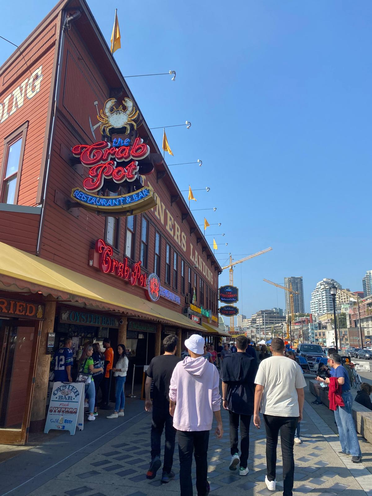
We made a 28-hour road trip from Wisconsin to Seattle in a rented minivan, just three months after arriving in the U.S. It was a spontaneous decision inspired by a YouTuber we all followed, and it turned out to be one of our most unforgettable adventures.
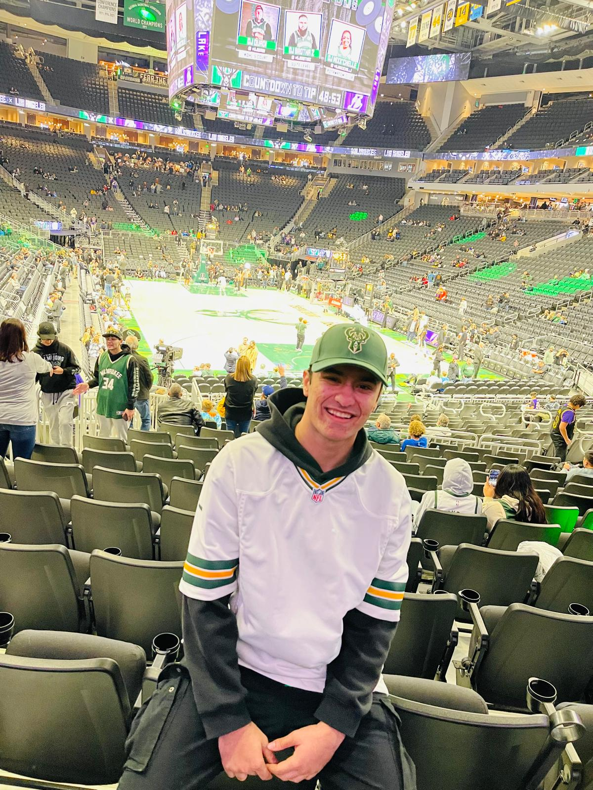
My girlfriend surprised me with NBA tickets to see the Bucks take on the Lakers. It was a dream come true to watch LeBron James play live and support our home team in an unforgettable game night experience.
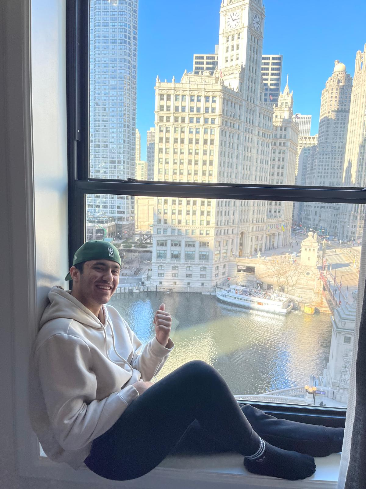
We celebrated our first Valentine’s Day in the heart of Chicago. From rooftop views and Naruto fan moments to Korean BBQ and Turkish cuisine, this trip was packed with surprises, laughter, and culture.
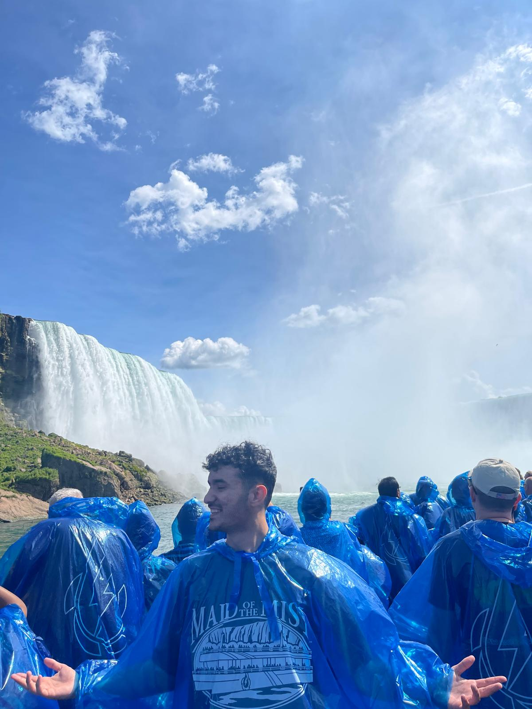
On our way to New York, we made a spontaneous 3-hour detour to Niagara Falls. It turned into one of the most powerful and memorable nature experiences of our journey — standing between two countries, soaked under the roar of the falls.
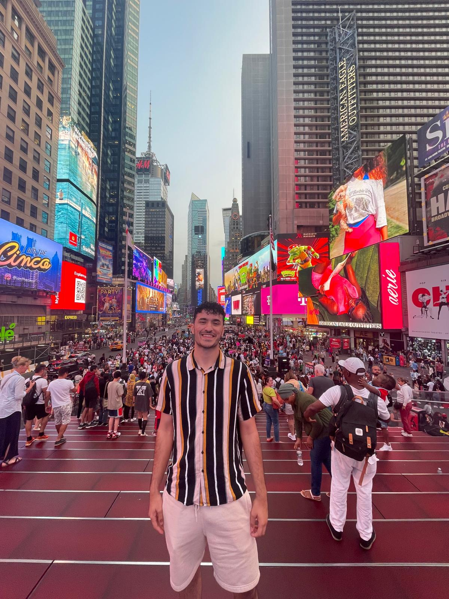
From a helicopter ride above the Statue of Liberty to exploring Times Square and tasting iconic New York pizza, this trip was a thrilling dive into the heart of the Big Apple.
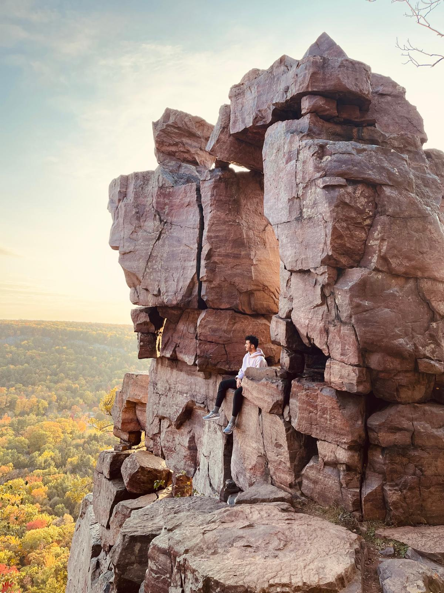
A golden autumn hike to Devils Door through clean trails, crisp air, and stunning views. My first visit to Devils Lake became an unforgettable nature adventure.
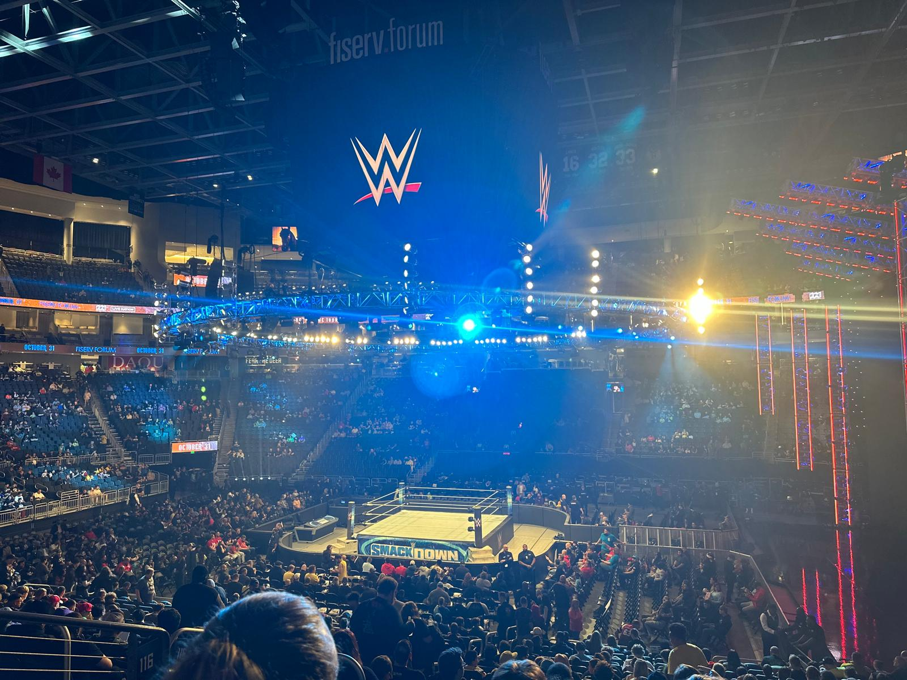
My friend Leo and I, both huge wrestling fans, went to see WWE SmackDown in Milwaukee. It was a dream come true to watch my childhood hero John Cena live. The night was filled with excitement, memories, and Cena’s iconic “Never Give Up” spirit.
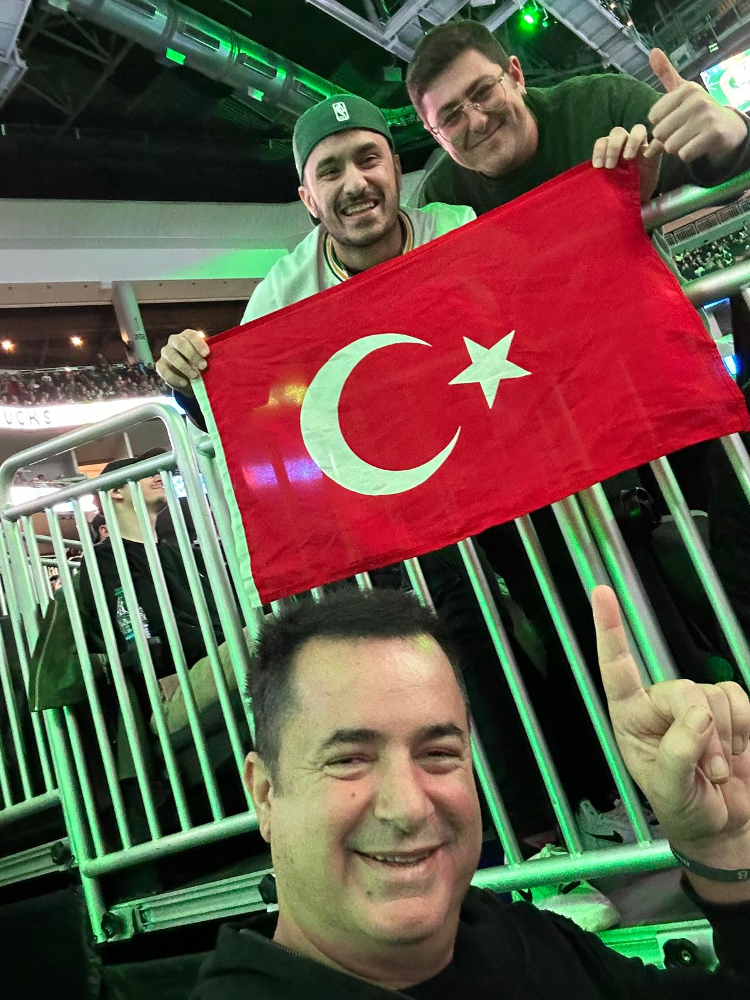
It was already exciting to see Alperen Şengün, the only Turkish player in the NBA, visit our state—but the night became legendary when we also got a chance to meet Acun Ilıcalı and Survivor stars. With our flags and signs ready, we cheered loud and proud. Bucks won, and we went home with memories for a lifetime.
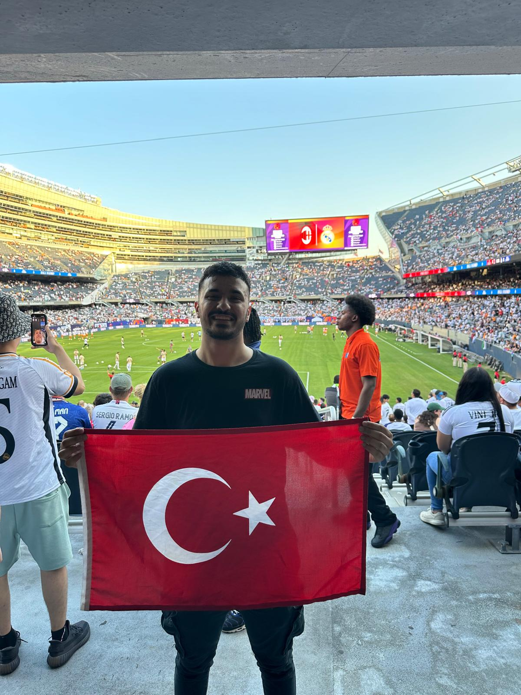
As a devoted Fenerbahçe fan, seeing Arda Güler shine at Real Madrid is a dream come true. When we heard Madrid would face Milan in Chicago, we grabbed our tickets right away. Holding our Turkish flags and cheering for Arda in a massive stadium was emotional, powerful, and unforgettable.
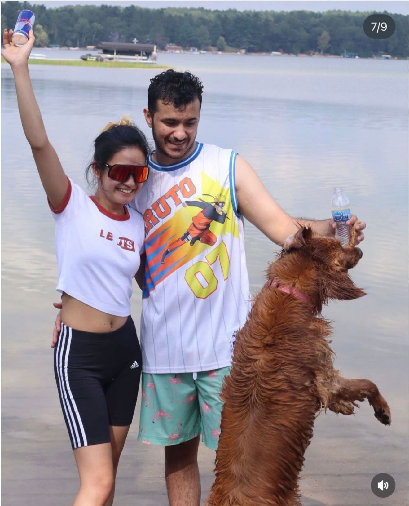
What started as a spontaneous invite turned into a cozy cabin getaway filled with forest hikes, Filipino seafood feasts, and dog-friendly lake swims. It was a peaceful escape to nature, shared with friends, our pup Wynter, and a grill full of burgers!
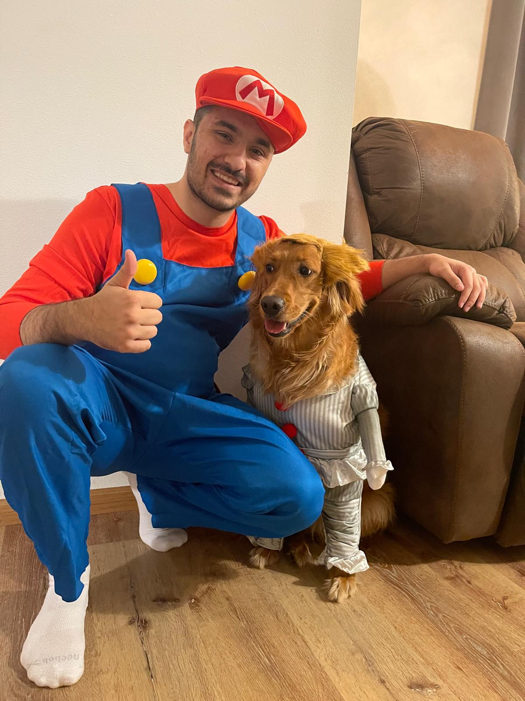
For my third Halloween in the U.S., I finally decided to embrace the tradition and join in costume. With my friends equally excited, we formed the perfect Mario-themed group — including our dog Wynter dressed as Pennywise! A fun night full of laughter, memories, and even a costume contest.

It’s now a yearly tradition for us to watch the Bucks live — and when we heard Turkish star Alperen Şengün was coming back with the Rockets, we didn’t hesitate to grab tickets. From pre-game burgers to signed hats and intense moments on the court, it was a night to remember.
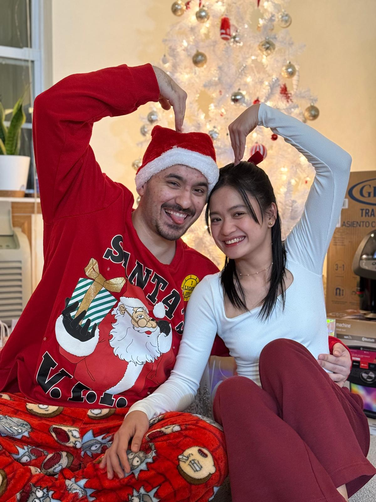
Even though we didn’t grow up celebrating Christmas, this year felt magical — thanks to my girlfriend who made sure we embraced the holiday spirit. From snow on Christmas morning to fun games and thoughtful gifts, it became one of the most unforgettable holidays I’ve ever experienced.

My friends had never been to Devils Lake before, which surprised me — so we made a plan right away. This time, my dog Wynter joined us. Despite being a house dog, she led the trail like a pro. It was a first hike for most of them, and they were amazed when I brought them to Devils Door. We ended the day with pizza and happy memories.